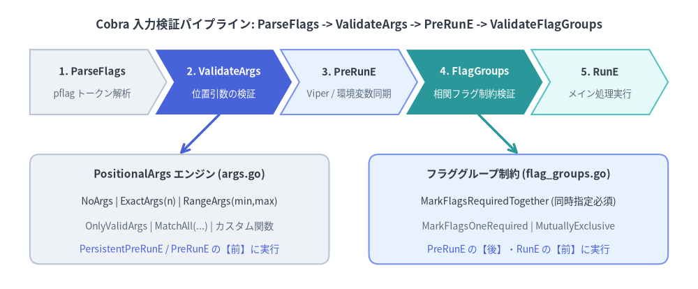
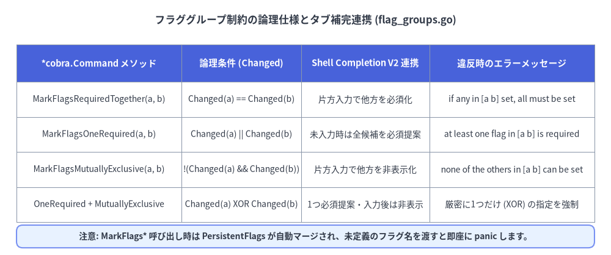

位置引数バリデータとフラググループ制約
本番環境向けの CLI ツールでは、ビジネスロジック（RunE）の内部に if len(args) != 2 や if flagA != "" && flagB != "" といった条件分岐を散재させるべきではありません。Cobra v1.10.2 はコマンド境界で宣言的に入力値を検証する2つのエンジンを備えています。位置引数を検証する PositionalArgs バリデータ（args.go）と、複数フラグ間の依存・排他関係を検証する フラググループ制約（flag_groups.go）です。

Source Code
from drawlib.canvas import save, setup
from drawlib.lines import line
from drawlib.shapes import rectangle
from drawlib.smartarts import ChevronProcess
from drawlib.styles import Styles
from drawlib.text import text
setup(width=140, height=58)
text(
(70, 53),
"Cobra 入力検証パイプライン: ParseFlags -> ValidateArgs -> PreRunE -> ValidateFlagGroups",
style=Styles.DarkBold.patch(text_size=12.0),
)
# Top pipeline chevrons
pipe = ChevronProcess(
style=Styles.Neutral,
text_style=Styles.DarkBold.patch(text_size=10.5),
description_style=Styles.Muted.patch(text_size=9.5),
corner_angle=60.0,
spacing=1.5,
flat_left_end=True,
)
pipe.add("1. ParseFlags", description="pflag トークン解析")
pipe.add(
"2. ValidateArgs",
description="位置引数の検証",
style=Styles.PrimaryFlat,
text_style=Styles.WhiteBold.patch(text_size=10.5),
description_style=Styles.White.patch(text_size=9.5),
)
pipe.add("3. PreRunE", description="Viper / 環境変数同期", style=Styles.PrimaryNeutral)
pipe.add(
"4. FlagGroups",
description="相関フラグ制約検証",
style=Styles.SecondaryFlat,
text_style=Styles.WhiteBold.patch(text_size=10.5),
description_style=Styles.White.patch(text_size=9.5),
)
pipe.add("5. RunE", description="メイン処理実行", style=Styles.SecondaryNeutral)
pipe.draw(xy=(6, 35), width=128, height=13)
# Bottom detail cards
rectangle((36, 16), width=60, height=22, style=Styles.Neutral.patch(shape_r=2.0))
text((36, 23), "PositionalArgs エンジン (args.go)", style=Styles.DarkBold.patch(text_size=11.0))
text((36, 17.5), "NoArgs | ExactArgs(n) | RangeArgs(min,max)", style=Styles.Dark.patch(text_size=10.0))
text((36, 12.5), "OnlyValidArgs | MatchAll(...) | カスタム関数", style=Styles.Muted.patch(text_size=10.0))
text((36, 8.0), "PersistentPreRunE / PreRunE の【前】に実行", style=Styles.Primary.patch(text_size=10.0))
rectangle((104, 16), width=60, height=22, style=Styles.PrimaryNeutral.patch(shape_r=2.0))
text((104, 23), "フラググループ制約 (flag_groups.go)", style=Styles.DarkBold.patch(text_size=11.0))
text((104, 17.5), "MarkFlagsRequiredTogether (同時指定必須)", style=Styles.Dark.patch(text_size=10.0))
text((104, 12.5), "MarkFlagsOneRequired | MutuallyExclusive", style=Styles.Muted.patch(text_size=10.0))
text((104, 8.0), "PreRunE の【後】・RunE の【前】に実行", style=Styles.Primary.patch(text_size=10.0))
line((44, 35), (36, 27), arrow_head="->", style=Styles.PrimaryBold)
line((96, 35), (104, 27), arrow_head="->", style=Styles.SecondaryBold)
save()
1. 組み込み PositionalArgs バリデータ一覧（args.go）
すべての cobra.Command は cobra.PositionalArgs 型の Args フィールドを持っています。
type PositionalArgs func(cmd *Command, args []string) error
cmd.Execute() の実行中、c.ParseFlags(a) によって認識済みのフラグが除外された後、残った位置引数スライス（argWoFlags）が c.ValidateArgs(argWoFlags) に渡されます。
組み込みバリデータ完全カタログ
| バリデータ関数 | 検証ルール | 違反時のエラーメッセージ形式 |
|---|---|---|
cobra.NoArgs |
len(args) == 0 |
unknown command "<arg0>" for "<cmd path>" |
cobra.ArbitraryArgs |
任意の個数を許可（常に nil） |
エラーを返さない |
cobra.ExactArgs(n) |
len(args) == n |
accepts <n> arg(s), received <len> |
cobra.MinimumNArgs(n) |
len(args) >= n |
requires at least <n> arg(s), only received <len> |
cobra.MaximumNArgs(n) |
len(args) <= n |
accepts at most <n> arg(s), received <len> |
cobra.RangeArgs(min, max) |
min <= len(args) <= max |
accepts between <min> and <max> arg(s), received <len> |
cobra.OnlyValidArgs |
全引数が cmd.ValidArgs に含まれる |
invalid argument "<arg>" for "<cmd path>"（＋タイポ提案） |
cobra.MatchAll(pargs...) |
複数バリデータの論理積（AND） |
最初に失敗したバリデータの error を即座に返す |
cobra.ExactValidArgs(n) |
非推奨: MatchAll(ExactArgs(n), OnlyValidArgs) |
個数エラーまたは許容リスト外エラー |
リーフコマンドにおける legacyArgs の落とし穴
cmd.Args を nil（未設定）のままにした場合、Cobra は内部の legacyArgs 関数（args.go:28-39）を使用します。
- サブコマンドを持つルートコマンド: 余分な位置引数を
unknown command %q for %qとして拒否し、類似コマンドを提案します。 - すべてのサブコマンド（またはサブコマンドを持たないルート）: 常に
nilを返し、任意の余分な位置引数を無条件に受け入れてしまいます。
実務のベストプラクティス: 位置引数を取らずフラグのみを受け取るリーフ（末端）サブコマンドには、必ず明示的に
Args: cobra.NoArgsを設定してください。未設定のままだと、mycli cluster list --output json extra-typoのようなタイポ引数がエラーにならず黙って無視されてしまいます。
2. MatchAll と OnlyValidArgs による複合バリデーション
cobra.OnlyValidArgs は cmd.ValidArgs スライスを参照して引数を検証します。Cobra v1.10.2 では Shell Completion V2 向けに "prod\t本番環境クラスタ" のようにタブ文字（\t）で説明文を付与できますが、OnlyValidArgs は比較前に自動で \t 以降を切り捨てる（strings.SplitN(v, "\t", 2)[0]）ため、補完説明と厳密な値チェックを単一の ValidArgs で両立できます。
さらに cobra.MatchAll を使えば、組み込みバリデータと独自のドメイン検証関数をクリーンに合成できます。
package cluster
import (
"fmt"
"regexp"
"github.com/spf13/cobra"
)
var k8sNameRegex = regexp.MustCompile(`^[a-z0-9]([-a-z0-9]*[a-z0-9])?$`)
// ValidateDNS1123Subdomain は args[idx] が RFC 1123 形式の名前であるか検証します。
func ValidateDNS1123Subdomain(idx int) cobra.PositionalArgs {
return func(cmd *cobra.Command, args []string) error {
if idx >= len(args) {
return nil
}
if !k8sNameRegex.MatchString(args[idx]) {
return fmt.Errorf(
"argument %q at position %d must be a lower-case DNS-1123 label",
args[idx], idx,
)
}
return nil
}
}
func NewPromoteCommand() *cobra.Command {
cmd := &cobra.Command{
Use: "promote <environment> <cluster-name>",
Short: "指定した環境内でクラスタを昇格します",
ValidArgs: []string{
"dev\t開発サンドボックス環境",
"staging\tステージング検証環境",
"prod\t本番高可用性環境",
},
// 引数個数チェック + 第1引数の ValidArgs 検証 + 第2引数の正規表現検証を合成
Args: cobra.MatchAll(
cobra.ExactArgs(2),
func(cmd *cobra.Command, args []string) error {
return cobra.OnlyValidArgs(cmd, args[:1])
},
ValidateDNS1123Subdomain(1),
),
RunE: func(cmd *cobra.Command, args []string) error {
env, clusterName := args[0], args[1]
cmd.Printf("Promoting cluster %q in %q\n", clusterName, env)
return nil
},
}
return cmd
}
--（ダッシュ区切り）引数の判定（ArgsLenAtDash）
kubectl exec pod-1 -- /bin/sh -c "echo hi" のように -- 以降の引数を外部プロセスへそのまま渡すコマンドでは、cmd.ArgsLenAtDash() を使用します。
- コマンドラインに
--が含まれない場合は-1を返します。 --が指定された場合は、argsスライス内で--が置かれた境界インデックスk >= 0を返します（args[:k]が--前の対象引数、args[k:]が--後のパススルー引数）。
3. 相関フラググループ制約（flag_groups.go）
実務の CLI では「認証用のユーザー名とパスワードは必ずセットで指定する」「JSON 出力と YAML 出力は同時指定できない」「ファイル入力か標準入力のどちらか一方は必須」といった複数フラグ間の相関ルールが頻出します。Cobra は flag_groups.go において pflag.Flag.Annotations を用いた3つの宣言的メソッドを提供しています。

Source Code
from drawlib.canvas import save, setup
from drawlib.shapes import rectangle
from drawlib.smartarts import Table
from drawlib.styles import Styles
from drawlib.text import text
setup(width=148, height=62)
text(
(74, 57),
"フラググループ制約の論理仕様とタブ補完連携 (flag_groups.go)",
style=Styles.DarkBold.patch(text_size=12.0),
)
tbl = Table(
cell_style=Styles.White,
text_style=Styles.Dark.patch(text_size=10.0),
header_cell_style=Styles.PrimaryFlat,
header_text_style=Styles.WhiteBold.patch(text_size=10.5),
border_style=Styles.MutedThin,
)
rows = [
["*cobra.Command メソッド", "論理条件 (Changed)", "Shell Completion V2 連携", "違反時のエラーメッセージ"],
[
"MarkFlagsRequiredTogether(a, b)",
"Changed(a) == Changed(b)",
"片方入力で他方を必須化",
"if any in [a b] set, all must be set",
],
[
"MarkFlagsOneRequired(a, b)",
"Changed(a) || Changed(b)",
"未入力時は全候補を必須提案",
"at least one flag in [a b] is required",
],
[
"MarkFlagsMutuallyExclusive(a, b)",
"!(Changed(a) && Changed(b))",
"片方入力で他方を非表示化",
"none of the others in [a b] can be set",
],
[
"OneRequired + MutuallyExclusive",
"Changed(a) XOR Changed(b)",
"1つ必須提案・入力後は非表示",
"厳密に1つだけ (XOR) の指定を強制",
],
]
tbl.draw_flexible(
xy=(4, 51),
column_widths=[40, 29, 31, 40],
row_heights=[9, 8.5, 8.5, 8.5, 8.5],
data=rows,
align="top_left",
)
rectangle((74, 4.5), width=140, height=5.5, style=Styles.PrimaryNeutral.patch(shape_r=1.5))
text(
(74, 4.5),
"注意: MarkFlags* 呼び出し時は PersistentFlags が自動マージされ、未定義のフラグ名を渡すと即座に panic します。",
style=Styles.DarkBold.patch(text_size=10.0),
)
save()
3つの基本制約＋排他的必須（XOR）パターン
- 同時指定必須（
MarkFlagsRequiredTogether(names ...string)）:- アノテーション
cobra_annotation_required_if_others_setを付与します。 - グループ内のフラグが「1つも指定されていない」か「すべて指定されている」場合のみ通過します。
- 例:
--tls-certと--tls-key、--usernameと--password。
- アノテーション
- 最低1つ必須（
MarkFlagsOneRequired(names ...string)）:- アノテーション
cobra_annotation_one_requiredを付与します。 - グループ内の少なくとも1つのフラグで
pflag.Changed == trueでなければエラーを返します。 - 例: 入力ソースとして
--file、--stdin、--urlのいずれか1つ以上を求める場合。
- アノテーション
- 相互排他（
MarkFlagsMutuallyExclusive(names ...string)）:- アノテーション
cobra_annotation_mutually_exclusiveを付与します。 - グループ内で2つ以上のフラグが同時に指定された場合にエラーを返します。
- 例:
--json、--yaml、--tableの出力フォーマット切り替え。
- アノテーション
- 厳密に1つだけ必須 / XOR（
OneRequired+MutuallyExclusiveの併用）:- 各メソッド呼び出しはフラグのアノテーションスライスに独立してグループ定義を追加するため、同じフラグペアに対して
MarkFlagsOneRequired("file", "stdin")とMarkFlagsMutuallyExclusive("file", "stdin")の両方を呼び出すことで、「どちらか一方のみ必須（両方指定も両方省略も不可）」という XOR 制約を宣言的に表現できます。
- 各メソッド呼び出しはフラグのアノテーションスライスに独立してグループ定義を追加するため、同じフラグペアに対して
実装例：複数のフラググループ制約を組み合わせた deploy コマンド
func NewDeployCommand() *cobra.Command {
var (
manifestFile string
fromStdin bool
tlsCert string
tlsKey string
outJSON bool
outYAML bool
)
cmd := &cobra.Command{
Use: "deploy <service-name>",
Short: "フラググループ制約を用いて安全にサービスをデプロイします",
Args: cobra.ExactArgs(1),
RunE: func(cmd *cobra.Command, args []string) error {
cmd.Printf("Deploying service %s...\n", args[0])
return nil
},
}
f := cmd.Flags()
f.StringVarP(&manifestFile, "file", "f", "", "マニフェストファイルのパス")
f.BoolVar(&fromStdin, "stdin", false, "標準入力からマニフェストを読み込む")
f.StringVar(&tlsCert, "tls-cert", "", "クライアント TLS 証明書パス")
f.StringVar(&tlsKey, "tls-key", "", "クライアント TLS 秘密鍵パス")
f.BoolVar(&outJSON, "json", false, "JSON 形式で出力")
f.BoolVar(&outYAML, "yaml", false, "YAML 形式で出力")
// 1. 排他的必須 (XOR): --file または --stdin のどちらか片方だけを必須にする
cmd.MarkFlagsOneRequired("file", "stdin")
cmd.MarkFlagsMutuallyExclusive("file", "stdin")
// 2. 同時指定必須: --tls-cert と --tls-key は片方だけ指定することを禁止する
cmd.MarkFlagsRequiredTogether("tls-cert", "tls-key")
// 3. 相互排他: --json と --yaml の同時指定を禁止する
cmd.MarkFlagsMutuallyExclusive("json", "yaml")
return cmd
}
4. 検証の実行タイミングとタブ補完（Shell Completion V2）との連動
(*Command).execute()（command.go:968-1013）における検証の実行順序を正確に理解しておくと、Viper や環境変数と組み合わせた際のバグを防げます。
ValidateArgsはPersistentPreRunE/PreRunEの【前】に実行される（command.go:968）:- 位置引数が不正な場合、ネットワーク接続や設定ファイル読み込みを行う
PersistentPreRunEに入る前に即座にフェイルファストします。
- 位置引数が不正な場合、ネットワーク接続や設定ファイル読み込みを行う
ValidateRequiredFlagsとValidateFlagGroupsはPreRunEの【後】・RunEの【前】に実行される（command.go:1007-1012）:- なぜ重要か: フラググループ検証は
PersistentPreRunEおよびPreRunEが完了した後にpflag.Changedを検査します。つまり、PersistentPreRunEの中で Viper や環境変数から読み取った値をcmd.Flags().Set(name, val)でフラグへ書き戻せば（pflag.Changed = trueになるため）、設定ファイル経由でもMarkFlagRequiredやMarkFlagsOneRequiredの制約を自然に満たすことができます。
- なぜ重要か: フラググループ検証は
- タブ補完での動的フィルタリング（
enforceFlagGroupsForCompletion）:- Cobra は補完候補を算出する直前に
enforceFlagGroupsForCompletion()（flag_groups.go:225-290）を実行します。 MutuallyExclusiveグループ内のフラグが1つでも入力済みであれば、競合する他方のフラグに自動でflag.Hidden = trueを設定し、<Tab>補完候補から除外します。RequiredTogetherグループ内のフラグが1つ入力されると、残りのペアのフラグを動的に必須マークし、<Tab>補完で優先的にサジェストします。
- Cobra は補完候補を算出する直前に